Prigod Games
Contact
Prigod Games
Contact
Press kit · updated 2026-08-24 · build 0.9.0.165
Build a hero. Send it to battle. Outbuild everything in your way.
Use anything on this page in articles, videos and streams. You do not need to ask. The terms are in the media and creator policy.
Fact sheet
- Title
- Prigod Idle
- Developer / Publisher
- Prigod Games
- Genre
- Idle / incremental RPG, auto-battler, character-building game
- Players
- Single-player, with optional leaderboards
- Status
- Pre-release; store page and free demo live since 22 Aug 2026
- Release date
- 4 November 2026 — Steam and Google Play, same day
- Price
- US$6.99
- Business model
- Premium, one-time purchase with no microtransactions
- Platforms
- Windows PC 64-bit (Steam) · Android (Google Play)
- Languages
- English, German, French, Spanish, Brazilian Portuguese, Russian, Simplified Chinese
- Engine
- Godot 4.6
- Press contact
- press@prigodgames.de
- Steam page
- https://store.steampowered.com/app/5091900/Prigod_Idle/Live — free demo available on the page
- Steam developer page
- https://store.steampowered.com/dev/PrigodGames
Short descriptions
One-sentence pitch
Build a hero. Send it to battle. Outbuild everything in your way.
Short description
Build a hero and send them to battle to fight for you! An idle auto-battler RPG where strategizing with your build is fun and meaningful. Combine gear, gems, relics, pets and tech trees, counter strange bosses, participate in multiple minigames and progress offline. Pay once, no ads or microtransactions.
About the game
Prigod Idle is a 2D fantasy idle auto-battler. You pick the hero, the gear, the abilities, the gems, the relics, the pets and the route. Your hero does the fighting. When an enemy seems to be too strong, change your build to overcome it! Besides the campaign stages there is prestige, Ascension, dungeons, crafting, housing, pet battles, ten events and 22 minigames. Pay once, play forever without microtransactions.
Store description
What the Steam page says
Prigod Idle is an idle auto-battler RPG. You equip the gear and abilities, your hero does the fighting. Craft a build from gear, gems, relics and four tech trees, then watch it carve through monsters, bosses and rival champions.
The hero fights. Your build decides.
- 37 heroes, and every one of them plays differently
- Gear with sockets, enchants and set-defining relic abilities
- 68 relics, 42 pets and 23 legendary Fables to collect
- Four tech trees and six prestige branches to shape long-term power
Read the boss. Build the answer.
- A long campaign with special bosses and unique boss mechanics
- Dungeons, Peril tiers, a recurring World Boss and the PvP Colosseum
- A route map every run: pick your path, your fights and your rewards
Earn your build in fights and minigames
- 10 events with exclusive heroes and gear
- 22 minigames: dig for gems, brew potions, drop Plinko chips, and many more
- Build out your homestead, get pets, and fill the Prigod Dex
No ingame store. Offline progression. Play it fully idle if you want.
- Full offline progress, including offline dungeon clears
- Gems are earned by playing. No ads, no energy walls, no microtransactions
Your desktop companion
- Runs on the side while you do other things
- Prestige unlocks new modules for automation
- A compact portrait window that fits beside anything
Try the free demo! Your demo progress carries into the full game.
Prigod Idle is an idle auto-battler RPG. You equip the gear and abilities, your hero does the fighting. Craft a build from gear, gems, relics and four tech trees, then watch it carve through monsters, bosses and rival champions. The hero fights. Your build decides. - 37 heroes, and every one of them plays differently - Gear with sockets, enchants and set-defining relic abilities - 68 relics, 42 pets and 23 legendary Fables to collect - Four tech trees and six prestige branches to shape long-term power Read the boss. Build the answer. - A long campaign with special bosses and unique boss mechanics - Dungeons, Peril tiers, a recurring World Boss and the PvP Colosseum - A route map every run: pick your path, your fights and your rewards Earn your build in fights and minigames - 10 events with exclusive heroes and gear - 22 minigames: dig for gems, brew potions, drop Plinko chips, and many more - Build out your homestead, get pets, and fill the Prigod Dex No ingame store. Offline progression. Play it fully idle if you want. - Full offline progress, including offline dungeon clears - Gems are earned by playing. No ads, no energy walls, no microtransactions Your desktop companion - Runs on the side while you do other things - Prestige unlocks new modules for automation - A compact portrait window that fits beside anything Try the free demo! Your demo progress carries into the full game.
Demo
The demo is the real game up to stage 10 (about 2 to 3 hours), with its own save. Demo progress carries into the full game. The full game adds the rest of the campaign and its difficulty tiers, prestige, the World Tree and Ascension, every rotating event with its minigames and event heroes, the Colosseum and the arena tree, housing, crafting, the Gem Mine and commissions, Fables, pets and pet battles, the complete hero and relic roster, and the Hardcore and other pace modes.
Key features
- Your build does the fighting. Heroes attack on their own. Gear, abilities, gems, relics, pets, enchants, tech trees and combos decide how.
- 37 heroes, and they do not play alike. Every one has its own animations and kit.
- Builds worth naming. Crit, combo, DoT, curse, summon, tank, thorns, charge, healer, elemental. Swap to any of them the moment a wall says you should.
- Runs you steer, progress you do not babysit. Pick a route and pick your fights. Generators keep paying out while the game is closed.
- A lot to collect. 68 relics whose abilities stay on the relic, 42 pets with rolled stats, 23 Fables, plus gems, gear and cosmetics.
- Four tech trees and six prestige branches. Reset a run, grow the World Tree, then raise the caps themselves with Ascension.
- Ten events and 22 minigames. Dig for gems, brew potions, drop Plinko chips, deduce a hidden fleet. None of them test reflexes. All of them pay progression.
- One purchase, and that is it. Gems are earned. Energy paces runs, it does not sell refills. No ads, no battle pass.
Trailer
{kind=link}
Screenshots
Click any shot to download the full-resolution PNG. All eight are in the kit ZIP as well.
{kind=link}
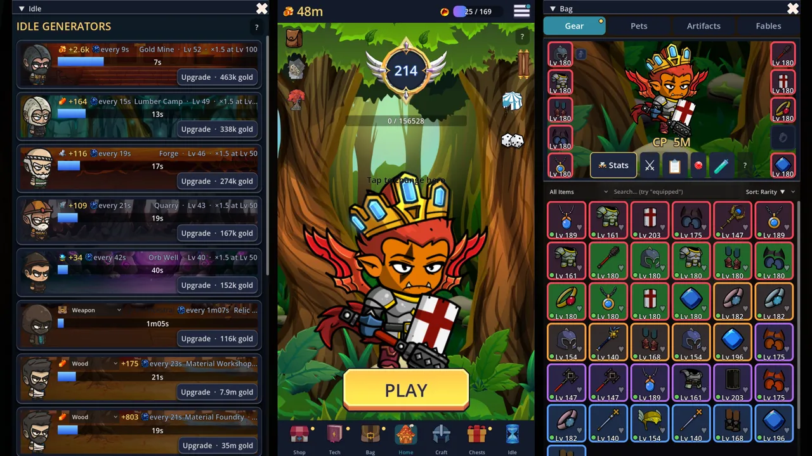
{kind=link}
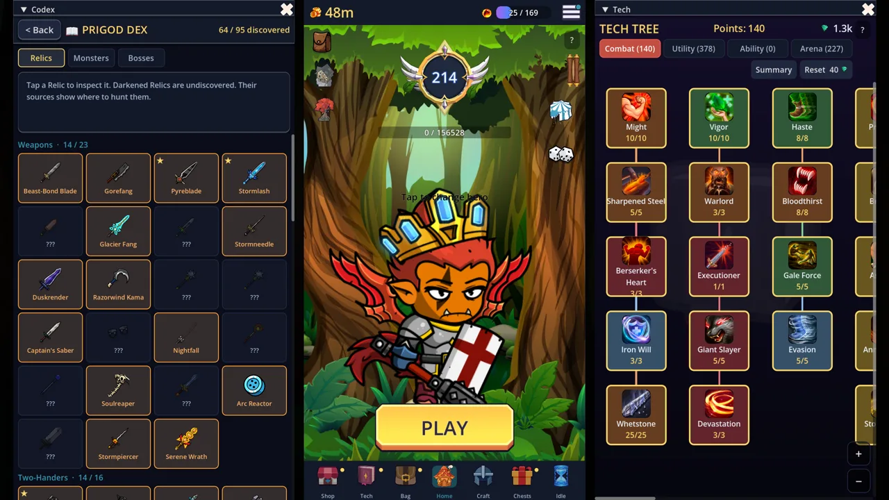
{kind=link}
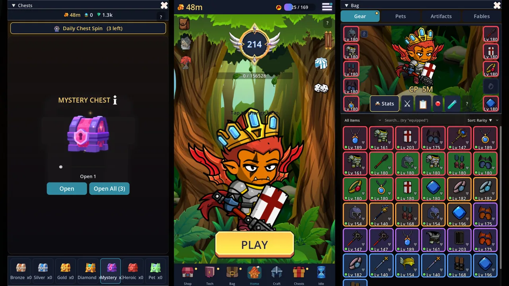
{kind=link}
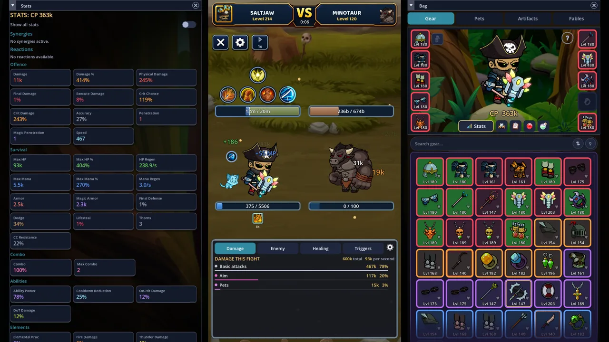
{kind=link}
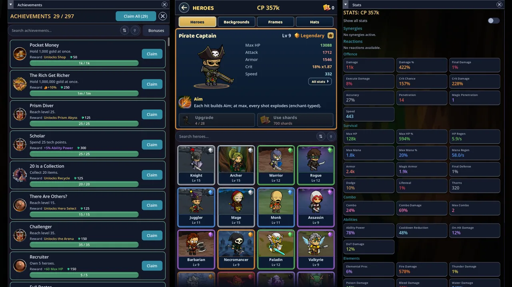
{kind=link}
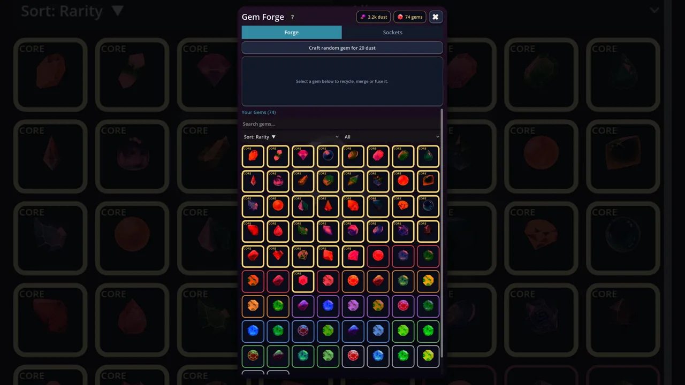
{kind=link}
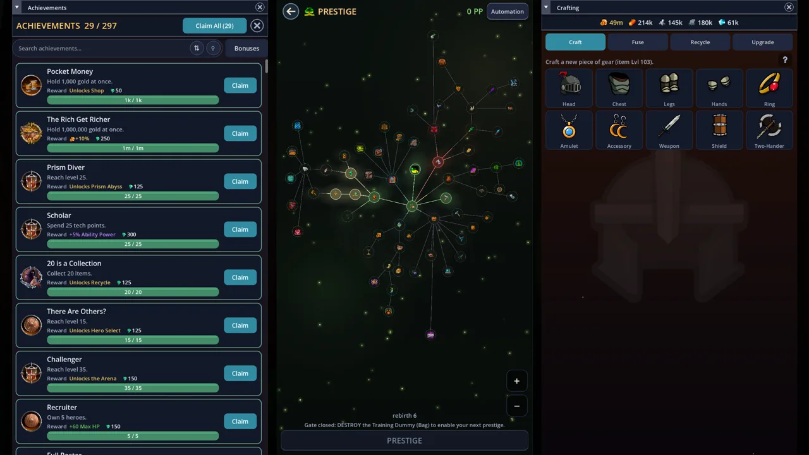
{kind=link}
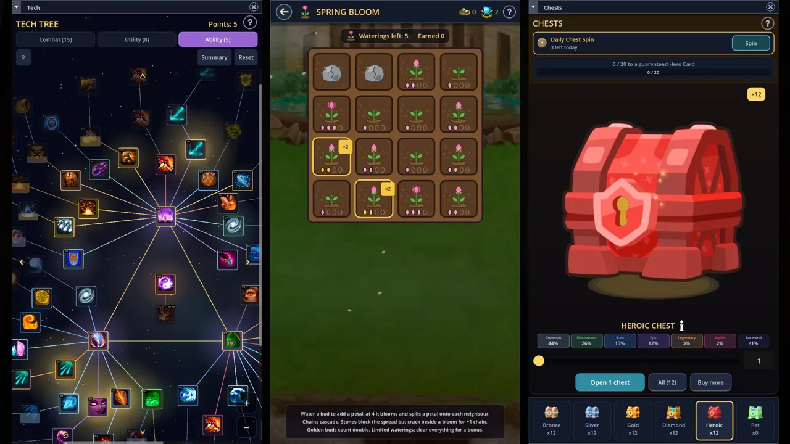
Logo & key art
{kind=link}
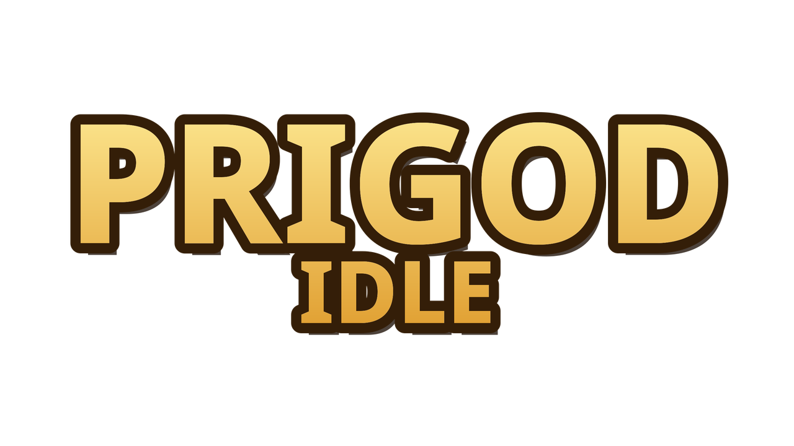
{kind=link}
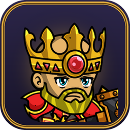
{kind=link}
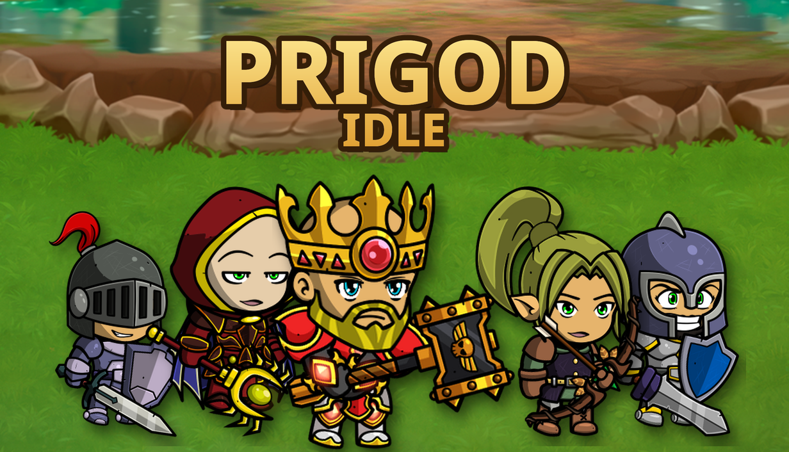
{kind=link}
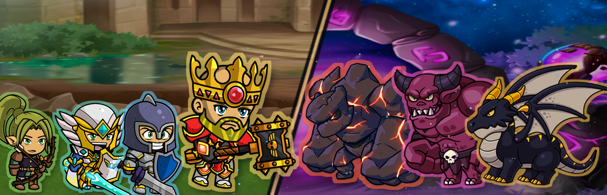
{kind=link}
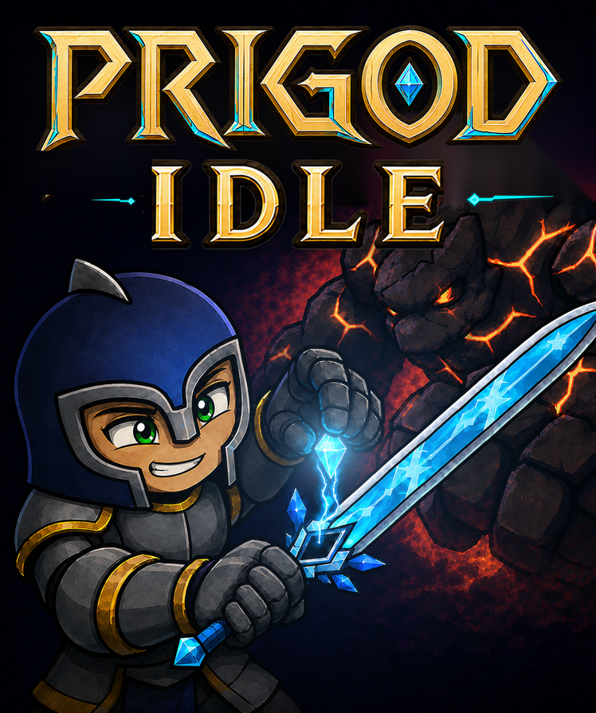
Animated loops
Silent gameplay loops for embeds and social posts. Right-click to save, or use the links below.
Coverage angles
- An idle game with long-term progression without microtransactions.
- Combat you win at the build screen instead of by tapping.
- One developer, many ideas and a lot of systems wired into each other.
- 22 minigames built on logic and decisions rather than reflexes.
- Use a small portrait interface to play it on the side or use full screen with extra panels.
Media and creator policy
Publish what you like. Articles, reviews, screenshots, videos, streams, monetized or not. Use the assets here or capture your own. You do not need to ask first.
Two limits. Do not sell the supplied assets themselves, and do not present edited assets as official or imply that Prigod Games endorses your video or your product.
Want an interview, a preview key, or something this page does not cover? Write to press@prigodgames.de.
No generated visual assets ship in the game. Some third-party art needs attribution in the credits screen. That is the developer's job, not yours.
System requirements
| Minimum | Recommended | |
|---|---|---|
| OS | Windows 10 64-bit | Windows 10/11 64-bit |
| Processor | Dual-core 2 GHz | Quad-core |
| Memory | 4 GB RAM | 8 GB RAM |
| Graphics | Vulkan 1.0 compatible GPU | Dedicated GPU |
| Storage | 2 GB available space | 2 GB available space |
These mirror the live Steam page. They have not been measured on low-end hardware, so treat the minimum column as a floor to verify, not a tested result.
Developer / Publisher
My name is Nicolas, I have a masters degree in Data Science and one of my greatest hobbies is creating games! Prigod Idle is the first game to come out of my one person indie studio based in Germany!